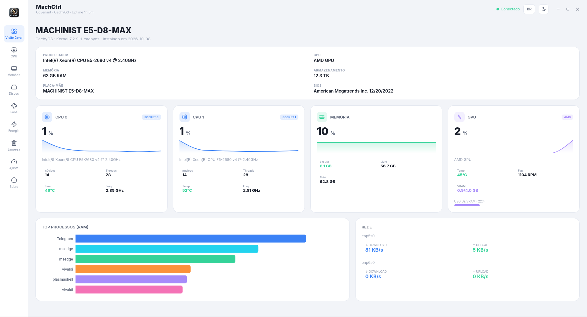
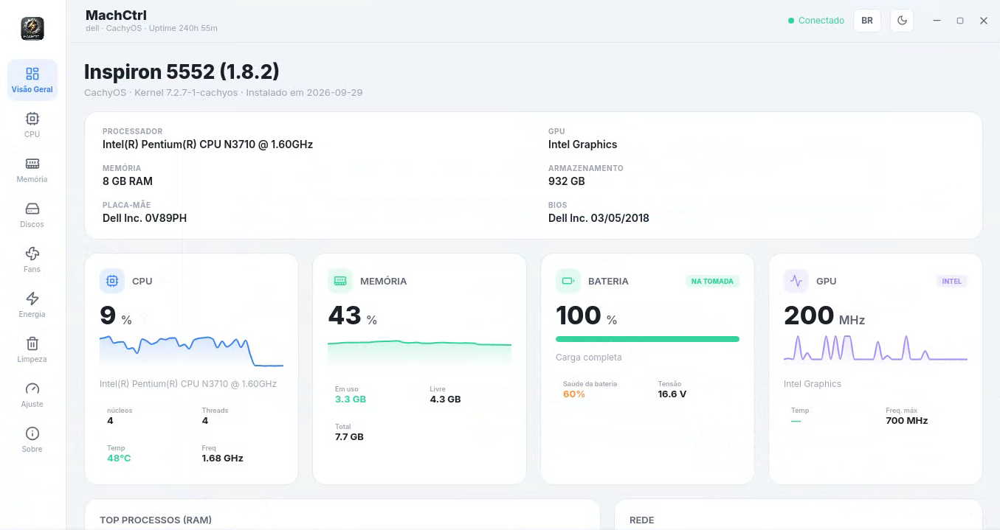
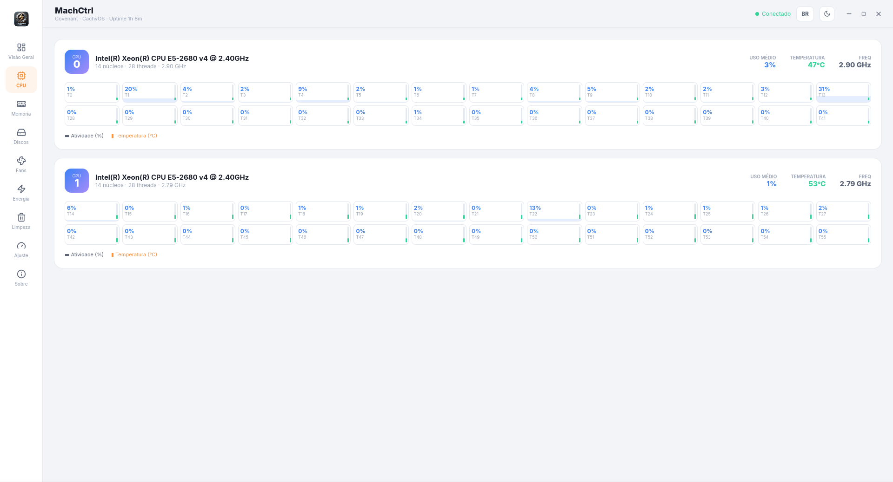
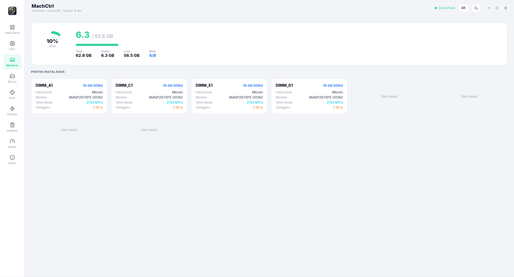
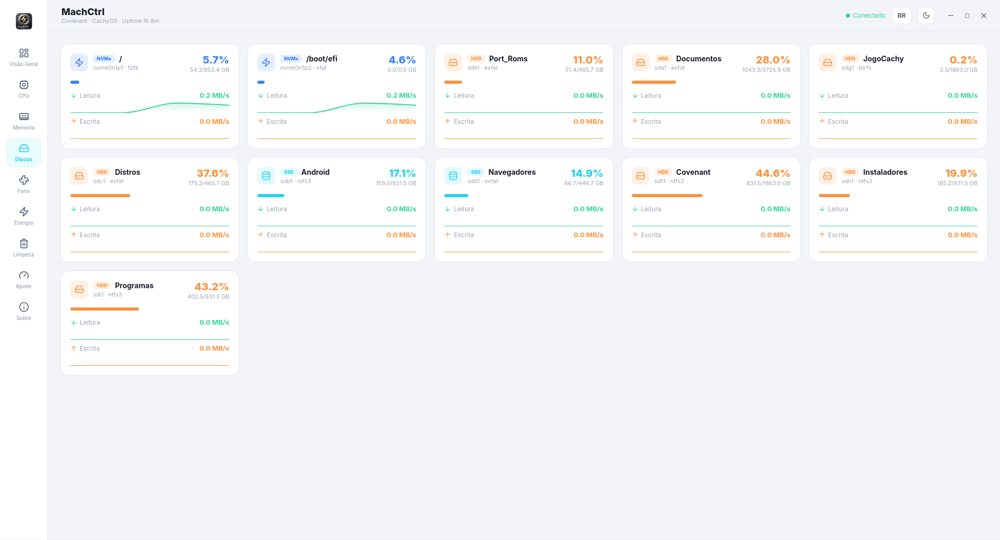
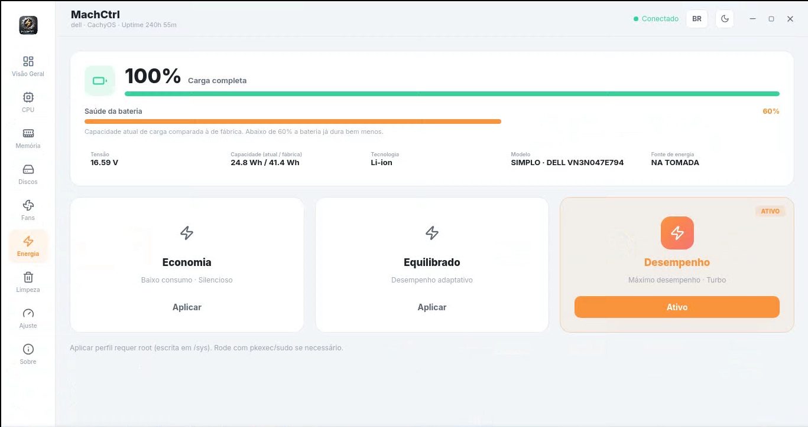
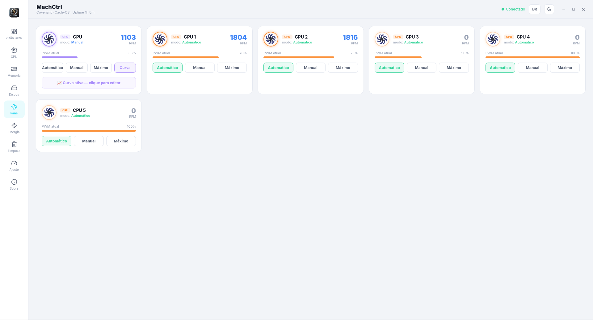
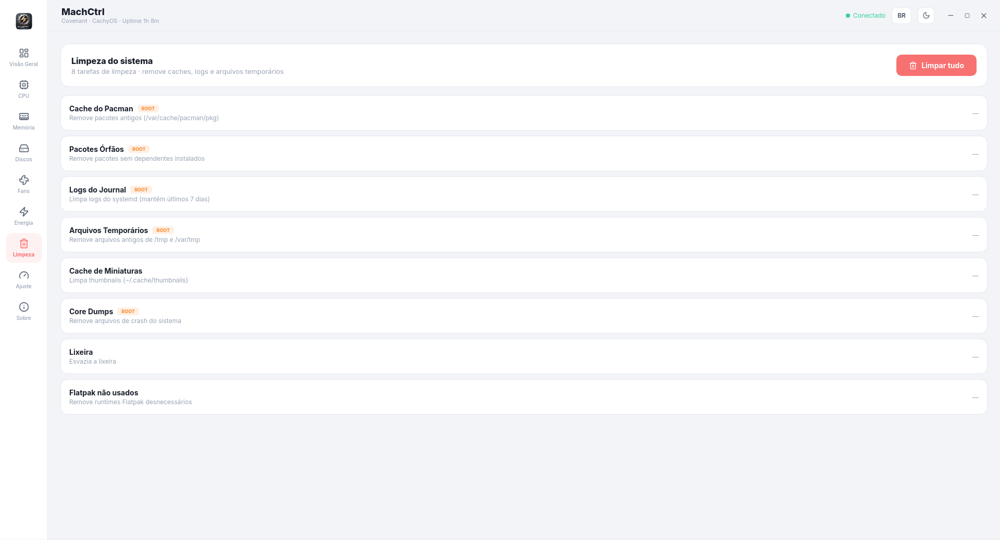
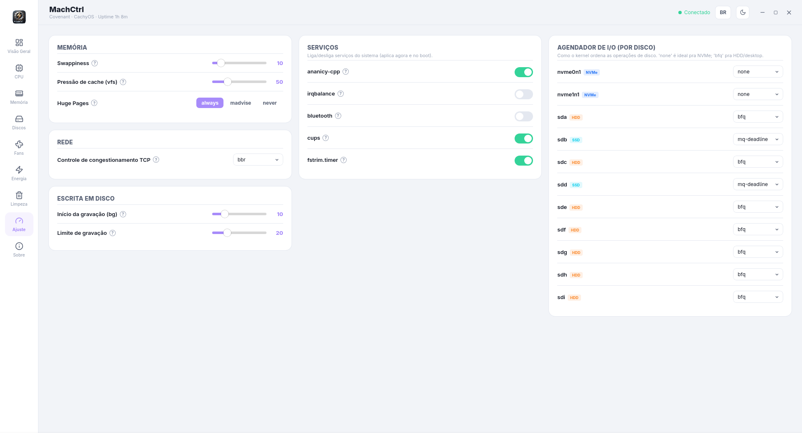

MachCtrl3.0
Cada detalhe. Sob seu controle.
Monitor e Otimizador de Hardware para Linux — versão nativa com Rust + Tauri v2 + React.
Visual dark/light moderno, backend Rust lendo os sensores direto de /proc e /sys
(sem sysinfo, sem Electron, sem WebView pesado — usa o WebKitGTK do próprio sistema).

Visão Geral
Cards de CPU/Memória/GPU com gráficos ao vivo, Top Processos (RAM) e Rede
🧠CPU
Multi-socket (um card por CPU física), grid de núcleos com atividade + temperatura
🧩Memória
Uso + pentes DIMM (via dmidecode)
💽Discos
Todas as partições com barra de uso
🌀Fans
RPM/PWM com slider de controle e modo Auto
🔋Energia
Perfis Economia / Equilibrado / Desempenho
🧹Limpeza
Tarefas de limpeza do sistema
🛠️Ajuste
Otimizações do sistema
em construçãoVisão Detalhada
Visão Geral do Sistema
Dashboard central com resumo da CPU, RAM, GPU, Rede e Top Processos. Ajusta-se perfeitamente a diferentes setups, desde notebooks até estações Xeon.
Dashboard Alternativo (Notebook)
Visão geral detalhando o estado da bateria, tensão e frequências de setups mais focados em eficiência.

Monitoramento de CPU Avançado
Acompanhamento individual de uso, temperatura e frequência de cada thread e núcleo do processador.

Gestão de Memória
Visualização dos pentes instalados, velocidade (MT/s), voltagem e slots disponíveis na placa-mãe.

Métricas de Armazenamento (Discos)
Taxa de leitura e escrita em tempo real, capacidade total e sistemas de arquivos (F2FS, BTRFS, NTFS3, etc.) de todas as unidades mapeadas.

Perfis de Energia
Ajuste simplificado para os modos de Desempenho, Equilibrado e Economia de Bateria com detalhamento de saúde das células.

Controle de Ventoinhas (Fans)
Controle preciso de RPM com suporte a curvas customizadas e modos Automático, Manual e Máximo via PWM.

Limpeza do Sistema
Manutenção ágil para remover pacotes órfãos, esvaziar cache do Pacman, limpar logs do Journal e muito mais em um clique.

Ajustes
Alguns ajustes para melhor aproveitar seu hardware, rede, discos, serviços e memoria.
